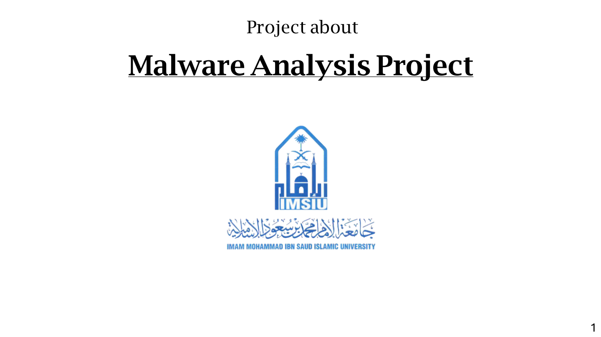
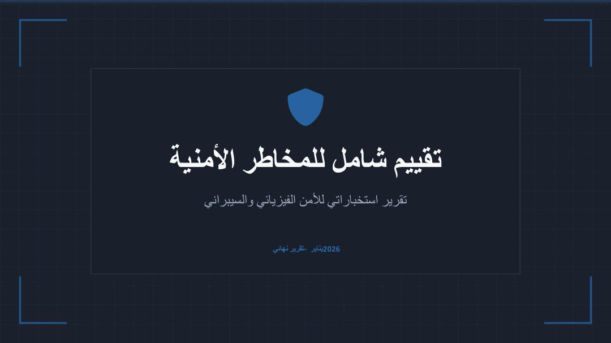
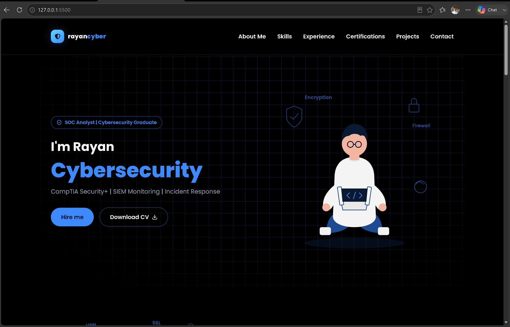

Certificate
SOC L1
TryHackMe
May 30, 2026
View certificateI'm Rayan
CompTIA Security+ | SIEM Monitoring | Incident Response
Hey, I'm Rayan, a Cybersecurity graduate from Imam Muhammad ibn Saud Islamic University (GPA 4.61/5). I gained hands-on SOC experience through training at SDAIA, where I monitored and analyzed security alerts using SIEM tools, investigated logs for suspicious activity, and built use cases and dashboards to improve monitoring and reporting. I hold a CompTIA Security+ certification and built a malware analysis lab as my graduation project using REMnux and FLARE VM. Now looking to start my career as an entry-level SOC analyst.
Core areas I've worked in, and the tools I use to get the job done.
Where I trained, and the hands-on experience I built along the way.
Saudi Data and Artificial Intelligence Authority (SDAIA)
A few things I've built and worked on.

Case studyGraduation project: built an isolated lab to safely detonate and analyze malware samples, then documented the indicators of compromise.

Case studyTuwaiq Academy project: acted as a CTI consulting team producing a full risk assessment for a client considering a job offer abroad.

Case studyMy personal portfolio, designed and built from scratch to showcase my skills, experience, and projects in cybersecurity.
Credentials and focused training that support my cybersecurity journey.
TryHackMe
May 30, 2026
View certificateCompTIA
Apr 5, 2026
View certificateTryHackMe
Mar 19, 2026
View certificateTuwaiq Academy
Jan 15, 2026
View certificateSOC & SSA · SDAIA
Professional training
View certificateSplunk
Sep 25, 2025
View certificateOpen to opportunities
Have an opportunity, a security project, or just want to talk cybersecurity? You can reach me directly through email or LinkedIn.